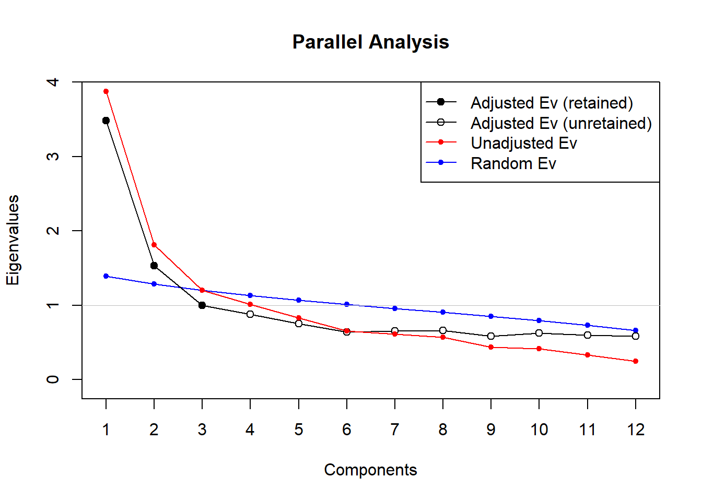

AQ and Schizotypy Factor Analysis FU1
These are the actual factor analyses we are most interested in.
library(dplyr)
library(psych)
library(paran)
library(lavaan)
library(knitr)data_FU2 = read.csv("complete scores winsorzied FU2.csv")#aberrant_salience = data_chirica %>% dplyr::select(wss_magical_ideation_scores, spq_unusual_perception, spq_magical_thinking, spq_suspiciousness, spq_idea_of_reference, spq_odd_speech, original_AQ_social_discourse, wss_perceptual_aberration_score, original_AQ_pattern, spq_eccentric_behavior) %>% rowMeans(na.rm=T)
#asociality = data_chirica %>% dplyr::select(original_AQ_social_anhedonia, spq_no_close_friends, spq_social_anxiety, spq_constricted_affect, wss_social_anhedonia_score) %>% rowMeans(na.rm=T)
#non_divergent = data_chirica %>% dplyr::select(original_AQ_imagination, wss_physical_anhedonia_score, original_AQ_social_anhedonia)%>% rowMeans(na.rm=T)
#cbind(aberrant_salience, asociality, non_divergent) %>% corr.test()including MSS Disorganized Schizotypy
new_data_FU2 = data_FU2 %>% dplyr::select(
starts_with("new_AQ"),
starts_with("wss"),
starts_with("spq"),
starts_with("MSS"))paran(new_data_FU2, cfa=FALSE, graph=TRUE,
color=TRUE, col=c("black", "red", "blue"))## Using eigendecomposition of correlation matrix.##
## Computing: 10% 20% 30% 40% 50% 60% 70% 80% 90% 100%##
## Results of Horn's Parallel Analysis for component retention
## 360 iterations, using the mean estimate
##
## ──────────────────────────────────────────────────
## Component Adjusted Unadjusted Estimated
## Eigenvalue Eigenvalue Bias
## ──────────────────────────────────────────────────
## 1 3.482908 3.873138 0.390230
## 2 1.528617 1.813093 0.284475
## 3 1.000419 1.204582 0.204163
## ──────────────────────────────────────────────────
## Criterion: retain adjusted eigenvalues > 1.
## (3 components retained)
new_data_mod_3F_PA_FU2 = fa(new_data_FU2, nfactors = 3, fm = "pa")
new_data_mod_3F_PA_FU2$PVAL## [1] 1.404846e-05new_data_mod_3F_PA_FU2$dof## [1] 33new_data_mod_3F_PA_FU2$RMSEA## RMSEA lower upper confidence
## 0.07715723 0.05550040 0.09965306 0.90000000new_data_mod_3F_PA_FU2$chi## [1] 26.89775new_data_mod_3F_PA_FU2$TLI## [1] 0.88101571 - (1 - new_data_mod_3F_PA_FU2$TLI)* new_data_mod_3F_PA_FU2$dof / new_data_mod_3F_PA_FU2$null.dof## [1] 0.9405078new_data_mod_3F_PA_FU2$loadings##
## Loadings:
## PA3 PA1 PA2
## new_AQ_social_anhedonia_FU2 -0.224 0.524 0.231
## new_AQ_pattern_FU2 0.465 0.121
## new_AQ_social_cogition_FU2 -0.120 0.693
## new_AQ_social_discourse_FU2 0.365 0.560
## new_AQ_imagination_FU2 -0.113 0.469
## wss_magical_ideation_scores_FU2 0.798
## wss_perceptual_aberration_score_FU2 0.741
## wss_physical_anhedonia_score_FU2 0.215 0.139
## spq_no_close_friends_FU2 0.842
## spq_constricted_affect_FU2 0.819
## spq_eccentric_behavior_FU2 0.304 0.160 0.379
## MSS_scores_FU2 0.326 0.158 0.414
##
## PA3 PA1 PA2
## SS loadings 1.826 1.766 1.428
## Proportion Var 0.152 0.147 0.119
## Cumulative Var 0.152 0.299 0.418summary(new_data_mod_3F_PA_FU2)##
## Factor analysis with Call: fa(r = new_data_FU2, nfactors = 3, fm = "pa")
##
## Test of the hypothesis that 3 factors are sufficient.
## The degrees of freedom for the model is 33 and the objective function was 0.35
## The number of observations was 231 with Chi Square = 78.53 with prob < 1.4e-05
##
## The root mean square of the residuals (RMSA) is 0.04
## The df corrected root mean square of the residuals is 0.06
##
## Tucker Lewis Index of factoring reliability = 0.881
## RMSEA index = 0.077 and the 90 % confidence intervals are 0.056 0.1
## BIC = -101.07
## With factor correlations of
## PA3 PA1 PA2
## PA3 1.00 0.24 0.3
## PA1 0.24 1.00 0.4
## PA2 0.30 0.40 1.0write.csv(new_data_mod_3F_PA_FU2$communality, "New Model FU2 3 factor PA Communality.csv")
write.csv(new_data_mod_3F_PA_FU2$loadings, "New Model FU2 3 factor PA Loadings.csv")new_data_mod_3F_EFA_FU2 = fa(new_data_FU2, nfactors = 3, fm = "ml")
new_data_mod_3F_EFA_FU2$PVAL## [1] 3.256867e-05new_data_mod_3F_EFA_FU2$dof## [1] 33new_data_mod_3F_EFA_FU2$RMSEA## RMSEA lower upper confidence
## 0.07479100 0.05287881 0.09743929 0.90000000new_data_mod_3F_EFA_FU2$chi## [1] 29.24923new_data_mod_3F_EFA_FU2$TLI## [1] 0.88817911 - (1 - new_data_mod_3F_EFA_FU2$TLI)* new_data_mod_3F_EFA_FU2$dof / new_data_mod_3F_EFA_FU2$null.dof## [1] 0.9440895new_data_mod_3F_EFA_FU2$loadings##
## Loadings:
## ML3 ML1 ML2
## new_AQ_social_anhedonia_FU2 0.497 0.214 -0.219
## new_AQ_pattern_FU2 0.143 0.440
## new_AQ_social_cogition_FU2 0.661 -0.168
## new_AQ_social_discourse_FU2 0.641 0.247
## new_AQ_imagination_FU2 0.446 -0.140
## wss_magical_ideation_scores_FU2 0.792
## wss_perceptual_aberration_score_FU2 0.747
## wss_physical_anhedonia_score_FU2 0.210 0.101 0.101
## spq_no_close_friends_FU2 0.841
## spq_constricted_affect_FU2 0.840 0.107
## spq_eccentric_behavior_FU2 0.129 0.467 0.225
## MSS_scores_FU2 0.140 0.474 0.264
##
## ML3 ML1 ML2
## SS loadings 1.753 1.584 1.679
## Proportion Var 0.146 0.132 0.140
## Cumulative Var 0.146 0.278 0.418summary(new_data_mod_3F_EFA_FU2)##
## Factor analysis with Call: fa(r = new_data_FU2, nfactors = 3, fm = "ml")
##
## Test of the hypothesis that 3 factors are sufficient.
## The degrees of freedom for the model is 33 and the objective function was 0.34
## The number of observations was 231 with Chi Square = 75.78 with prob < 3.3e-05
##
## The root mean square of the residuals (RMSA) is 0.04
## The df corrected root mean square of the residuals is 0.06
##
## Tucker Lewis Index of factoring reliability = 0.888
## RMSEA index = 0.075 and the 90 % confidence intervals are 0.053 0.097
## BIC = -103.82
## With factor correlations of
## ML3 ML1 ML2
## ML3 1.00 0.42 0.21
## ML1 0.42 1.00 0.35
## ML2 0.21 0.35 1.00write.csv(new_data_mod_3F_EFA_FU2$communality, "New Model FU2 3 factor EFA Communality.csv")
write.csv(new_data_mod_3F_EFA_FU2$loadings, "New Model FU2 3 factor EFA Loadings.csv")new_data_mod_4F_PA_FU2 = fa(new_data_FU2, nfactors = 4, fm = "pa")
new_data_mod_4F_PA_FU2$PVAL## [1] 0.004193583new_data_mod_4F_PA_FU2$dof## [1] 24new_data_mod_4F_PA_FU2$RMSEA## RMSEA lower upper confidence
## 0.06312446 0.03494039 0.09073197 0.90000000new_data_mod_4F_PA_FU2$chi## [1] 13.19062new_data_mod_4F_PA_FU2$TLI## [1] 0.91997621 - (1 - new_data_mod_4F_PA_FU2$TLI)* new_data_mod_4F_PA_FU2$dof / new_data_mod_4F_PA_FU2$null.dof## [1] 0.9709004new_data_mod_4F_PA_FU2$loadings##
## Loadings:
## PA3 PA4 PA2 PA1
## new_AQ_social_anhedonia_FU2 0.485 -0.143 0.268
## new_AQ_pattern_FU2 0.326 0.289 -0.114
## new_AQ_social_cogition_FU2 -0.121 0.455 0.426
## new_AQ_social_discourse_FU2 0.119 0.743
## new_AQ_imagination_FU2 0.213 0.447
## wss_magical_ideation_scores_FU2 0.722 0.110
## wss_perceptual_aberration_score_FU2 0.810
## wss_physical_anhedonia_score_FU2 0.132 0.283 -0.179 0.448
## spq_no_close_friends_FU2 0.900
## spq_constricted_affect_FU2 0.770 0.142
## spq_eccentric_behavior_FU2 0.201 0.130 0.504
## MSS_scores_FU2 0.174 0.217 0.436
##
## PA3 PA4 PA2 PA1
## SS loadings 1.735 1.504 1.394 0.691
## Proportion Var 0.145 0.125 0.116 0.058
## Cumulative Var 0.145 0.270 0.386 0.444summary(new_data_mod_4F_PA_FU2)##
## Factor analysis with Call: fa(r = new_data_FU2, nfactors = 4, fm = "pa")
##
## Test of the hypothesis that 4 factors are sufficient.
## The degrees of freedom for the model is 24 and the objective function was 0.21
## The number of observations was 231 with Chi Square = 46.2 with prob < 0.0042
##
## The root mean square of the residuals (RMSA) is 0.03
## The df corrected root mean square of the residuals is 0.05
##
## Tucker Lewis Index of factoring reliability = 0.92
## RMSEA index = 0.063 and the 90 % confidence intervals are 0.035 0.091
## BIC = -84.42
## With factor correlations of
## PA3 PA4 PA2 PA1
## PA3 1.00 0.21 0.34 0.29
## PA4 0.21 1.00 0.41 0.01
## PA2 0.34 0.41 1.00 0.25
## PA1 0.29 0.01 0.25 1.00write.csv(new_data_mod_4F_PA_FU2$communality, "New Model FU2 4 Factor PA Communality.csv")
write.csv(new_data_mod_4F_PA_FU2$loadings, "New Model FU2 4 Factor PA Loadings.csv")new_data_mod_4F_EFA_FU2 = fa(new_data_FU2, nfactors = 4, fm = "ml")
new_data_mod_4F_EFA_FU2$PVAL## [1] 0.01179356new_data_mod_4F_EFA_FU2$dof## [1] 24new_data_mod_4F_EFA_FU2$RMSEA## RMSEA lower upper confidence
## 0.05736477 0.02700353 0.08566416 0.90000000new_data_mod_4F_EFA_FU2$chi## [1] 15.37422new_data_mod_4F_EFA_FU2$TLI## [1] 0.93384781 - (1 - new_data_mod_4F_EFA_FU2$TLI)* new_data_mod_4F_EFA_FU2$dof / new_data_mod_4F_EFA_FU2$null.dof## [1] 0.9759446new_data_mod_4F_EFA_FU2$loadings##
## Loadings:
## ML1 ML4 ML2 ML3
## new_AQ_social_anhedonia_FU2 0.400 -0.146 0.413
## new_AQ_pattern_FU2 0.365 0.244
## new_AQ_social_cogition_FU2 0.248 0.592
## new_AQ_social_discourse_FU2 0.848
## new_AQ_imagination_FU2 0.503
## wss_magical_ideation_scores_FU2 0.764
## wss_perceptual_aberration_score_FU2 0.802
## wss_physical_anhedonia_score_FU2 0.237 -0.147 0.319
## spq_no_close_friends_FU2 0.961
## spq_constricted_affect_FU2 0.707 0.183 -0.125
## spq_eccentric_behavior_FU2 0.152 0.219 0.342 0.167
## MSS_scores_FU2 0.146 0.314 0.248 0.252
##
## ML1 ML4 ML2 ML3
## SS loadings 1.651 1.610 1.092 0.990
## Proportion Var 0.138 0.134 0.091 0.082
## Cumulative Var 0.138 0.272 0.363 0.445summary(new_data_mod_4F_EFA_FU2)##
## Factor analysis with Call: fa(r = new_data_FU2, nfactors = 4, fm = "ml")
##
## Test of the hypothesis that 4 factors are sufficient.
## The degrees of freedom for the model is 24 and the objective function was 0.19
## The number of observations was 231 with Chi Square = 42.35 with prob < 0.012
##
## The root mean square of the residuals (RMSA) is 0.03
## The df corrected root mean square of the residuals is 0.05
##
## Tucker Lewis Index of factoring reliability = 0.934
## RMSEA index = 0.057 and the 90 % confidence intervals are 0.027 0.086
## BIC = -88.27
## With factor correlations of
## ML1 ML4 ML2 ML3
## ML1 1.00 0.22 0.24 0.40
## ML4 0.22 1.00 0.44 0.14
## ML2 0.24 0.44 1.00 0.36
## ML3 0.40 0.14 0.36 1.00write.csv(new_data_mod_4F_EFA_FU2$communality, "New Model FU2 4 Factor EFA Communality.csv")
write.csv(new_data_mod_4F_EFA_FU2$loadings, "New Model FU2 4 Factor EFA Loadings.csv")CFA for the three-factor model, based on EFA and PA
cfa_3F_FU2 = "
aberrant_salience =~ wss_magical_ideation_scores_FU2 + wss_perceptual_aberration_score_FU2 + new_AQ_pattern_FU2
Asociality =~ new_AQ_social_anhedonia_FU2 + wss_physical_anhedonia_score_FU2+ spq_no_close_friends_FU2 + spq_constricted_affect_FU2
non_divergent_thinking =~ new_AQ_social_cogition_FU2 + new_AQ_social_discourse_FU2 + new_AQ_imagination_FU2+ spq_eccentric_behavior_FU2 + MSS_scores_FU2
"
cfa_3f = cfa(cfa_3F_FU2, data_FU2)
summary(cfa_3f,fit.measures=T,standardized=TRUE)## lavaan 0.7-3 ended normally after 71 iterations
##
## Estimator ML
## Optimization method NLMINB
## Number of model parameters 27
##
## Number of observations 231
##
## Model Test User Model:
##
## Test statistic 137.070
## Degrees of freedom 51
## P-value (Chi-square) 0.000
##
## Browne's residual (NT model-based) test
## Test statistic 131.915
## Degrees of freedom 51
## P-value (Chi-square) 0.000
##
## Model Test Baseline Model:
##
## Test statistic 860.404
## Degrees of freedom 66
## P-value 0.000
##
## User Model versus Baseline Model:
##
## Comparative Fit Index (CFI) 0.892
## Tucker-Lewis Index (TLI) 0.860
##
## Loglikelihood and Information Criteria:
##
## Loglikelihood user model (H0) -1745.858
## Loglikelihood unrestricted model (H1) -1677.323
##
## Akaike (AIC) 3545.715
## Bayesian (BIC) 3638.661
## Sample-size adjusted Bayesian (SABIC) 3553.086
##
## Root Mean Square Error of Approximation:
##
## RMSEA 0.085
## 90 Percent confidence interval - lower 0.068
## 90 Percent confidence interval - upper 0.103
## P-value H_0: RMSEA <= 0.050 0.001
## P-value H_0: RMSEA >= 0.080 0.714
##
## Standardized Root Mean Square Residual:
##
## SRMR 0.071
##
## Goodness of Fit Index:
##
## Goodness of Fit Index (GFI) 0.945
## 90 Percent confidence interval - lower 0.921
## 90 Percent confidence interval - upper 0.965
##
## Parameter Estimates:
##
## Standard errors Standard
## Information Expected
## Information saturated (h1) model Structured
##
## Latent Variables:
## Estimate Std.Err z-value P(>|z|) Std.lv
## aberrant_salience =~
## wss_mgcl___FU2 1.000 0.151
## wss_prcp___FU2 0.916 0.104 8.806 0.000 0.138
## nw_AQ_pttr_FU2 2.733 0.408 6.702 0.000 0.412
## Asociality =~
## nw_AQ_scl__FU2 1.000 0.462
## wss_phys___FU2 0.082 0.023 3.652 0.000 0.038
## spq_n_cls__FU2 2.221 0.286 7.780 0.000 1.026
## spq_cnstr__FU2 1.516 0.194 7.813 0.000 0.701
## non_divergent_thinking =~
## nw_AQ_scl__FU2 1.000 0.333
## nw_AQ_scl__FU2 1.639 0.258 6.340 0.000 0.546
## nw_AQ_mgnt_FU2 0.631 0.162 3.896 0.000 0.210
## spq_ccntr__FU2 2.112 0.342 6.169 0.000 0.704
## MSS_scores_FU2 0.639 0.101 6.299 0.000 0.213
## Std.all
##
## 0.818
## 0.745
## 0.502
##
## 0.536
## 0.273
## 0.895
## 0.781
##
## 0.472
## 0.729
## 0.322
## 0.678
## 0.716
##
## Covariances:
## Estimate Std.Err z-value P(>|z|) Std.lv Std.all
## aberrant_salience ~~
## Asociality 0.017 0.006 2.788 0.005 0.243 0.243
## nn_dvrgnt_thnk 0.031 0.006 4.834 0.000 0.621 0.621
## Asociality ~~
## nn_dvrgnt_thnk 0.081 0.020 4.143 0.000 0.528 0.528
##
## Variances:
## Estimate Std.Err z-value P(>|z|) Std.lv Std.all
## .wss_mgcl___FU2 0.011 0.002 4.735 0.000 0.011 0.331
## .wss_prcp___FU2 0.015 0.002 6.635 0.000 0.015 0.446
## .nw_AQ_pttr_FU2 0.503 0.051 9.805 0.000 0.503 0.748
## .nw_AQ_scl__FU2 0.529 0.053 9.981 0.000 0.529 0.713
## .wss_phys___FU2 0.018 0.002 10.608 0.000 0.018 0.925
## .spq_n_cls__FU2 0.261 0.082 3.197 0.001 0.261 0.198
## .spq_cnstr__FU2 0.313 0.047 6.661 0.000 0.313 0.390
## .nw_AQ_scl__FU2 0.389 0.039 10.019 0.000 0.389 0.778
## .nw_AQ_scl__FU2 0.263 0.034 7.781 0.000 0.263 0.468
## .nw_AQ_mgnt_FU2 0.382 0.037 10.454 0.000 0.382 0.896
## .spq_ccntr__FU2 0.582 0.068 8.532 0.000 0.582 0.540
## .MSS_scores_FU2 0.043 0.005 8.003 0.000 0.043 0.488
## aberrant_salnc 0.023 0.004 6.204 0.000 1.000 1.000
## Asociality 0.213 0.052 4.080 0.000 1.000 1.000
## nn_dvrgnt_thnk 0.111 0.032 3.427 0.001 1.000 1.000cfa_3f## lavaan 0.7-3 ended normally after 71 iterations
##
## Estimator ML
## Optimization method NLMINB
## Number of model parameters 27
##
## Number of observations 231
##
## Model Test User Model:
##
## Test statistic 137.070
## Degrees of freedom 51
## P-value (Chi-square) 0.000
##
## Browne's residual (NT model-based) test
## Test statistic 131.915
## Degrees of freedom 51
## P-value (Chi-square) 0.000CFA for the four-factor model, based on PAC factor loadings (the EFA using ML had 6 cross-loadings)
cfa_4F_PAC_FU2 = "
aberrant_salience =~ wss_magical_ideation_scores_FU2 + wss_perceptual_aberration_score_FU2 + new_AQ_pattern_FU2
Asociality =~ new_AQ_social_anhedonia_FU2 + spq_no_close_friends_FU2 + spq_constricted_affect_FU2
non_divergent_thinking =~ new_AQ_social_cogition_FU2 + new_AQ_social_discourse_FU2 + spq_eccentric_behavior_FU2 + MSS_scores_FU2
hyposensitivity =~ new_AQ_imagination_FU2 + wss_physical_anhedonia_score_FU2
"
cfa_4f_PAC_model_FU2 = cfa(cfa_4F_PAC_FU2, data_FU2)
summary(cfa_4f_PAC_model_FU2,fit.measures=T,standardized=TRUE)## lavaan 0.7-3 ended normally after 85 iterations
##
## Estimator ML
## Optimization method NLMINB
## Number of model parameters 30
##
## Number of observations 231
##
## Model Test User Model:
##
## Test statistic 128.527
## Degrees of freedom 48
## P-value (Chi-square) 0.000
##
## Browne's residual (NT model-based) test
## Test statistic 123.682
## Degrees of freedom 48
## P-value (Chi-square) 0.000
##
## Model Test Baseline Model:
##
## Test statistic 860.404
## Degrees of freedom 66
## P-value 0.000
##
## User Model versus Baseline Model:
##
## Comparative Fit Index (CFI) 0.899
## Tucker-Lewis Index (TLI) 0.861
##
## Loglikelihood and Information Criteria:
##
## Loglikelihood user model (H0) -1741.586
## Loglikelihood unrestricted model (H1) -1677.323
##
## Akaike (AIC) 3543.173
## Bayesian (BIC) 3646.445
## Sample-size adjusted Bayesian (SABIC) 3551.362
##
## Root Mean Square Error of Approximation:
##
## RMSEA 0.085
## 90 Percent confidence interval - lower 0.068
## 90 Percent confidence interval - upper 0.103
## P-value H_0: RMSEA <= 0.050 0.001
## P-value H_0: RMSEA >= 0.080 0.701
##
## Standardized Root Mean Square Residual:
##
## SRMR 0.065
##
## Goodness of Fit Index:
##
## Goodness of Fit Index (GFI) 0.948
## 90 Percent confidence interval - lower 0.925
## 90 Percent confidence interval - upper 0.967
##
## Parameter Estimates:
##
## Standard errors Standard
## Information Expected
## Information saturated (h1) model Structured
##
## Latent Variables:
## Estimate Std.Err z-value P(>|z|) Std.lv
## aberrant_salience =~
## wss_mgcl___FU2 1.000 0.150
## wss_prcp___FU2 0.925 0.104 8.899 0.000 0.139
## nw_AQ_pttr_FU2 2.741 0.409 6.707 0.000 0.411
## Asociality =~
## nw_AQ_scl__FU2 1.000 0.460
## spq_n_cls__FU2 2.261 0.294 7.698 0.000 1.040
## spq_cnstr__FU2 1.505 0.193 7.796 0.000 0.692
## non_divergent_thinking =~
## nw_AQ_scl__FU2 1.000 0.330
## nw_AQ_scl__FU2 1.658 0.264 6.279 0.000 0.547
## spq_ccntr__FU2 2.134 0.349 6.110 0.000 0.704
## MSS_scores_FU2 0.643 0.103 6.228 0.000 0.212
## hyposensitivity =~
## nw_AQ_mgnt_FU2 1.000 0.342
## wss_phys___FU2 0.179 0.054 3.328 0.001 0.061
## Std.all
##
## 0.814
## 0.749
## 0.501
##
## 0.534
## 0.907
## 0.772
##
## 0.466
## 0.730
## 0.678
## 0.713
##
## 0.524
## 0.439
##
## Covariances:
## Estimate Std.Err z-value P(>|z|) Std.lv
## aberrant_salience ~~
## Asociality 0.016 0.006 2.653 0.008 0.229
## nn_dvrgnt_thnk 0.031 0.006 4.843 0.000 0.636
## hyposensitivty 0.015 0.007 2.299 0.021 0.293
## Asociality ~~
## nn_dvrgnt_thnk 0.078 0.019 4.073 0.000 0.517
## hyposensitivty 0.077 0.023 3.402 0.001 0.486
## non_divergent_thinking ~~
## hyposensitivty 0.065 0.019 3.536 0.000 0.580
## Std.all
##
## 0.229
## 0.636
## 0.293
##
## 0.517
## 0.486
##
## 0.580
##
## Variances:
## Estimate Std.Err z-value P(>|z|) Std.lv Std.all
## .wss_mgcl___FU2 0.011 0.002 4.900 0.000 0.011 0.337
## .wss_prcp___FU2 0.015 0.002 6.588 0.000 0.015 0.439
## .nw_AQ_pttr_FU2 0.504 0.051 9.814 0.000 0.504 0.749
## .nw_AQ_scl__FU2 0.531 0.053 10.002 0.000 0.531 0.715
## .spq_n_cls__FU2 0.232 0.085 2.720 0.007 0.232 0.177
## .spq_cnstr__FU2 0.325 0.048 6.781 0.000 0.325 0.404
## .nw_AQ_scl__FU2 0.391 0.039 10.042 0.000 0.391 0.782
## .nw_AQ_scl__FU2 0.262 0.034 7.771 0.000 0.262 0.467
## .spq_ccntr__FU2 0.582 0.068 8.539 0.000 0.582 0.540
## .MSS_scores_FU2 0.044 0.005 8.054 0.000 0.044 0.492
## .nw_AQ_mgnt_FU2 0.309 0.048 6.423 0.000 0.309 0.725
## .wss_phys___FU2 0.016 0.002 8.214 0.000 0.016 0.808
## aberrant_salnc 0.023 0.004 6.200 0.000 1.000 1.000
## Asociality 0.212 0.052 4.063 0.000 1.000 1.000
## nn_dvrgnt_thnk 0.109 0.032 3.386 0.001 1.000 1.000
## hyposensitivty 0.117 0.047 2.476 0.013 1.000 1.000cfa_4f_PAC_model_FU2## lavaan 0.7-3 ended normally after 85 iterations
##
## Estimator ML
## Optimization method NLMINB
## Number of model parameters 30
##
## Number of observations 231
##
## Model Test User Model:
##
## Test statistic 128.527
## Degrees of freedom 48
## P-value (Chi-square) 0.000
##
## Browne's residual (NT model-based) test
## Test statistic 123.682
## Degrees of freedom 48
## P-value (Chi-square) 0.000correlations using SEM
sem_correlation_syntax_FU2 = "
aberrant_salience =~ wss_magical_ideation_scores_FU2 + wss_perceptual_aberration_score_FU2 + new_AQ_pattern_FU2
asociality =~ new_AQ_social_anhedonia_FU2 + wss_physical_anhedonia_score_FU2+ spq_no_close_friends_FU2 + spq_constricted_affect_FU2
non_divergent_thinking =~ new_AQ_social_cogition_FU2 + new_AQ_social_discourse_FU2 + new_AQ_imagination_FU2+ spq_eccentric_behavior_FU2 + MSS_scores_FU2
aberrant_salience ~~ asociality
aberrant_salience ~~ non_divergent_thinking
asociality ~~ non_divergent_thinking
SeSS_FU2 ~~ aberrant_salience
SeSS_FU2 ~~ asociality
SeSS_FU2 ~~ non_divergent_thinking
ASI_score_FU2 ~~ aberrant_salience
ASI_score_FU2 ~~ asociality
ASI_score_FU2 ~~ non_divergent_thinking
REI_NFC_score_FU2 ~~ aberrant_salience
REI_NFC_score_FU2 ~~ asociality
REI_NFC_score_FU2 ~~ non_divergent_thinking
REI_FI_score_FU2 ~~ aberrant_salience
REI_FI_score_FU2 ~~ asociality
REI_FI_score_FU2 ~~ non_divergent_thinking
BIF ~~ aberrant_salience
BIF ~~ asociality
BIF ~~ non_divergent_thinking
SeSS_FU2 ~~ ASI_score_FU2
SeSS_FU2 ~~ REI_NFC_score_FU2
SeSS_FU2 ~~ REI_FI_score_FU2
SeSS_FU2 ~~ BIF
ASI_score_FU2 ~~ REI_NFC_score_FU2
ASI_score_FU2 ~~ REI_FI_score_FU2
ASI_score_FU2 ~~ BIF
REI_NFC_score_FU2 ~~ REI_FI_score_FU2
REI_NFC_score_FU2 ~~ BIF
REI_FI_score_FU2 ~~ BIF
"
correlation_mod_FU2 = sem(sem_correlation_syntax_FU2, data_FU2)
summary(correlation_mod_FU2,fit.measures=T,standardized=TRUE)## lavaan 0.7-3 ended normally after 135 iterations
##
## Estimator ML
## Optimization method NLMINB
## Number of model parameters 57
##
## Number of observations 231
##
## Model Test User Model:
##
## Test statistic 285.296
## Degrees of freedom 96
## P-value (Chi-square) 0.000
##
## Browne's residual (NT model-based) test
## Test statistic 272.279
## Degrees of freedom 96
## P-value (Chi-square) 0.000
##
## Model Test Baseline Model:
##
## Test statistic 1237.509
## Degrees of freedom 136
## P-value 0.000
##
## User Model versus Baseline Model:
##
## Comparative Fit Index (CFI) 0.828
## Tucker-Lewis Index (TLI) 0.757
##
## Loglikelihood and Information Criteria:
##
## Loglikelihood user model (H0) -2434.159
## Loglikelihood unrestricted model (H1) -2291.511
##
## Akaike (AIC) 4982.319
## Bayesian (BIC) 5178.536
## Sample-size adjusted Bayesian (SABIC) 4997.879
##
## Root Mean Square Error of Approximation:
##
## RMSEA 0.092
## 90 Percent confidence interval - lower 0.080
## 90 Percent confidence interval - upper 0.105
## P-value H_0: RMSEA <= 0.050 0.000
## P-value H_0: RMSEA >= 0.080 0.952
##
## Standardized Root Mean Square Residual:
##
## SRMR 0.076
##
## Goodness of Fit Index:
##
## Goodness of Fit Index (GFI) 0.918
## 90 Percent confidence interval - lower 0.895
## 90 Percent confidence interval - upper 0.938
##
## Parameter Estimates:
##
## Standard errors Standard
## Information Expected
## Information saturated (h1) model Structured
##
## Latent Variables:
## Estimate Std.Err z-value P(>|z|) Std.lv
## aberrant_salience =~
## wss_mgcl___FU2 1.000 0.158
## wss_prcp___FU2 0.811 0.085 9.523 0.000 0.128
## nw_AQ_pttr_FU2 2.729 0.370 7.384 0.000 0.431
## asociality =~
## nw_AQ_scl__FU2 1.000 0.469
## wss_phys___FU2 0.084 0.022 3.772 0.000 0.040
## spq_n_cls__FU2 2.152 0.271 7.943 0.000 1.008
## spq_cnstr__FU2 1.514 0.191 7.913 0.000 0.710
## non_divergent_thinking =~
## nw_AQ_scl__FU2 1.000 0.362
## nw_AQ_scl__FU2 1.515 0.213 7.123 0.000 0.549
## nw_AQ_mgnt_FU2 0.591 0.142 4.160 0.000 0.214
## spq_ccntr__FU2 1.891 0.279 6.767 0.000 0.685
## MSS_scores_FU2 0.581 0.083 7.005 0.000 0.210
## Std.all
##
## 0.857
## 0.691
## 0.526
##
## 0.544
## 0.284
## 0.880
## 0.791
##
## 0.512
## 0.732
## 0.328
## 0.660
## 0.707
##
## Covariances:
## Estimate Std.Err z-value P(>|z|) Std.lv
## aberrant_salience ~~
## asociality 0.019 0.006 2.939 0.003 0.254
## nn_dvrgnt_thnk 0.034 0.007 5.131 0.000 0.599
## asociality ~~
## nn_dvrgnt_thnk 0.090 0.021 4.336 0.000 0.529
## aberrant_salience ~~
## SeSS_FU2 0.054 0.009 5.942 0.000 0.341
## asociality ~~
## SeSS_FU2 0.079 0.026 3.067 0.002 0.168
## non_divergent_thinking ~~
## SeSS_FU2 0.140 0.027 5.246 0.000 0.386
## aberrant_salience ~~
## ASI_score_FU2 0.020 0.004 5.717 0.000 0.128
## asociality ~~
## ASI_score_FU2 0.022 0.010 2.252 0.024 0.047
## non_divergent_thinking ~~
## ASI_score_FU2 0.041 0.009 4.388 0.000 0.112
## aberrant_salience ~~
## REI_NFC_sc_FU2 -0.005 0.010 -0.560 0.576 -0.034
## asociality ~~
## REI_NFC_sc_FU2 -0.054 0.028 -1.897 0.058 -0.115
## non_divergent_thinking ~~
## REI_NFC_sc_FU2 -0.037 0.023 -1.636 0.102 -0.103
## aberrant_salience ~~
## REI_FI_scr_FU2 0.025 0.009 2.974 0.003 0.160
## asociality ~~
## REI_FI_scr_FU2 0.004 0.024 0.150 0.881 0.008
## non_divergent_thinking ~~
## REI_FI_scr_FU2 -0.051 0.021 -2.478 0.013 -0.140
## aberrant_salience ~~
## BIF -0.002 0.003 -0.583 0.560 -0.010
## asociality ~~
## BIF -0.031 0.009 -3.527 0.000 -0.066
## non_divergent_thinking ~~
## BIF -0.030 0.007 -3.996 0.000 -0.082
## SeSS_FU2 ~~
## ASI_score_FU2 0.057 0.013 4.266 0.000 0.057
## REI_NFC_sc_FU2 -0.012 0.038 -0.324 0.746 -0.012
## REI_FI_scr_FU2 0.045 0.033 1.350 0.177 0.045
## BIF -0.030 0.011 -2.726 0.006 -0.030
## ASI_score_FU2 ~~
## REI_NFC_sc_FU2 0.016 0.015 1.082 0.279 0.016
## REI_FI_scr_FU2 0.037 0.013 2.758 0.006 0.037
## BIF 0.002 0.004 0.534 0.593 0.002
## REI_NFC_score_FU2 ~~
## REI_FI_scr_FU2 0.057 0.039 1.466 0.143 0.057
## BIF 0.013 0.013 1.036 0.300 0.013
## REI_FI_score_FU2 ~~
## BIF 0.038 0.011 3.376 0.001 0.038
## Std.all
##
## 0.254
## 0.599
##
## 0.529
##
## 0.483
##
## 0.238
##
## 0.547
##
## 0.461
##
## 0.168
##
## 0.404
##
## -0.041
##
## -0.140
##
## -0.125
##
## 0.224
##
## 0.011
##
## -0.196
##
## -0.043
##
## -0.282
##
## -0.353
##
## 0.292
## -0.021
## 0.089
## -0.182
##
## 0.071
## 0.185
## 0.035
##
## 0.097
## 0.068
##
## 0.228
##
## Variances:
## Estimate Std.Err z-value P(>|z|) Std.lv Std.all
## .wss_mgcl___FU2 0.009 0.002 4.306 0.000 0.009 0.265
## .wss_prcp___FU2 0.018 0.002 8.370 0.000 0.018 0.522
## .nw_AQ_pttr_FU2 0.487 0.049 9.856 0.000 0.487 0.724
## .nw_AQ_scl__FU2 0.523 0.053 9.933 0.000 0.523 0.704
## .wss_phys___FU2 0.018 0.002 10.587 0.000 0.018 0.919
## .spq_n_cls__FU2 0.297 0.077 3.850 0.000 0.297 0.226
## .spq_cnstr__FU2 0.301 0.046 6.560 0.000 0.301 0.374
## .nw_AQ_scl__FU2 0.368 0.037 10.027 0.000 0.368 0.738
## .nw_AQ_scl__FU2 0.260 0.031 8.318 0.000 0.260 0.464
## .nw_AQ_mgnt_FU2 0.381 0.036 10.506 0.000 0.381 0.893
## .spq_ccntr__FU2 0.608 0.066 9.156 0.000 0.608 0.565
## .MSS_scores_FU2 0.044 0.005 8.668 0.000 0.044 0.501
## SeSS_FU2 0.498 0.046 10.747 0.000 0.498 1.000
## ASI_score_FU2 0.077 0.007 10.747 0.000 0.077 1.000
## REI_NFC_sc_FU2 0.678 0.063 10.747 0.000 0.678 1.000
## REI_FI_scr_FU2 0.512 0.048 10.747 0.000 0.512 1.000
## BIF 0.054 0.005 10.747 0.000 0.054 1.000
## aberrant_salnc 0.025 0.004 6.939 0.000 1.000 1.000
## asociality 0.220 0.053 4.143 0.000 1.000 1.000
## nn_dvrgnt_thnk 0.131 0.034 3.849 0.000 1.000 1.000Finally, we look at the associations between all individual autism and schizotypy subscales and: (a) aberrant salience; (b) sensory sensitivity; (c) rational-experiential thinking style; and (d) processing style. AI was used to aid in the generation of correlation matrix.
complete_scores_FU2 <- read.csv("complete scores FU2.csv")
subscales_FU2 <- complete_scores_FU2 %>% dplyr::select(-ID)
correlation_matrix_FU2 <- corr.test(subscales_FU2, use = "pairwise", method = "pearson")
p_matrix_FU2 <- correlation_matrix_FU2$p
p_adj_matrix_FU2 <- matrix(NA, nrow = ncol(subscales_FU2), ncol = ncol(subscales_FU2))
p_adj_matrix_FU2[lower.tri(p_adj_matrix_FU2)] <- p.adjust(p_matrix_FU2[lower.tri(p_matrix_FU2)], method = "fdr")
stars <- ifelse(p_adj_matrix_FU2 < .001, "***",
ifelse(p_adj_matrix_FU2 < .01, "**",
ifelse(p_adj_matrix_FU2 < .05, "*", "")))
r_table <- matrix(
paste0(sprintf("%.2f", correlation_matrix_FU2$r), stars),
nrow = ncol(subscales_FU2),
dimnames = list(colnames(subscales_FU2), colnames(subscales_FU2))
)
r_table[upper.tri(r_table, diag = TRUE)] <- ""
rownames(r_table) <- paste0(seq_len(nrow(r_table)), ". ", rownames(r_table))
colnames(r_table) <- seq_len(ncol(r_table))
kable(r_table, caption = "Correlation Matrix")| 1 | 2 | 3 | 4 | 5 | 6 | 7 | 8 | 9 | 10 | 11 | 12 | 13 | 14 | 15 | 16 | 17 | 18 | 19 | 20 | 21 | 22 | 23 | 24 | 25 | |
|---|---|---|---|---|---|---|---|---|---|---|---|---|---|---|---|---|---|---|---|---|---|---|---|---|---|
| 1. X | |||||||||||||||||||||||||
| 2. original_AQ_social_anhedonia_FU2 | 0.12 | ||||||||||||||||||||||||
| 3. original_AQ_pattern_FU2 | -0.08 | -0.06 | |||||||||||||||||||||||
| 4. original_AQ_social_cognition_FU2 | 0.03 | 0.21** | 0.06 | ||||||||||||||||||||||
| 5. original_AQ_social_discourse_FU2 | 0.04 | 0.07 | 0.25*** | 0.34*** | |||||||||||||||||||||
| 6. original_AQ_imagination_FU2 | 0.13 | 0.28*** | 0.18* | 0.31*** | 0.21** | ||||||||||||||||||||
| 7. new_AQ_social_anhedonia_FU2 | 0.12 | 1.00*** | -0.06 | 0.21** | 0.07 | 0.28*** | |||||||||||||||||||
| 8. new_AQ_pattern_FU2 | -0.07 | -0.05 | 0.98*** | 0.08 | 0.31*** | 0.19** | -0.05 | ||||||||||||||||||
| 9. new_AQ_social_cogition_FU2 | 0.04 | 0.28*** | 0.10 | 0.94*** | 0.40*** | 0.33*** | 0.28*** | 0.12 | |||||||||||||||||
| 10. new_AQ_social_discourse_FU2 | 0.05 | 0.11 | 0.31*** | 0.36*** | 0.92*** | 0.25*** | 0.11 | 0.35*** | 0.41*** | ||||||||||||||||
| 11. new_AQ_imagination_FU2 | 0.11 | 0.25*** | 0.11 | 0.34*** | 0.20** | 0.96*** | 0.25*** | 0.13 | 0.35*** | 0.22** | |||||||||||||||
| 12. wss_magical_ideation_scores_FU2 | 0.07 | 0.03 | 0.42*** | -0.01 | 0.34*** | 0.12 | 0.03 | 0.42*** | 0.05 | 0.39*** | 0.07 | ||||||||||||||
| 13. wss_perceptual_aberration_score_FU2 | -0.04 | -0.02 | 0.33*** | 0.06 | 0.33*** | 0.05 | -0.02 | 0.34*** | 0.09 | 0.35*** | 0.03 | 0.63*** | |||||||||||||
| 14. wss_physical_anhedonia_score_FU2 | 0.11 | 0.20** | 0.00 | 0.15* | 0.16* | 0.22** | 0.20** | 0.01 | 0.19** | 0.15* | 0.23** | 0.17* | 0.23** | ||||||||||||
| 15. spq_no_close_friends_FU2 | 0.08 | 0.48*** | 0.10 | 0.19** | 0.21** | 0.23*** | 0.48*** | 0.09 | 0.22** | 0.31*** | 0.19** | 0.18* | 0.09 | 0.21** | |||||||||||
| 16. spq_constricted_affect_FU2 | 0.11 | 0.40*** | 0.18* | 0.17* | 0.14 | 0.21** | 0.40*** | 0.17* | 0.21** | 0.20** | 0.15* | 0.25*** | 0.19** | 0.25*** | 0.70*** | ||||||||||
| 17. MSS_scores_FU2 | 0.04 | 0.24*** | 0.19** | 0.27*** | 0.43*** | 0.30*** | 0.24*** | 0.20** | 0.34*** | 0.50*** | 0.26*** | 0.38*** | 0.41*** | 0.14* | 0.36*** | 0.31*** | |||||||||
| 18. spq_eccentric_behavior_FU2 | 0.03 | 0.28*** | 0.24*** | 0.27*** | 0.47*** | 0.18** | 0.28*** | 0.26*** | 0.29*** | 0.51*** | 0.16* | 0.36*** | 0.29*** | 0.14 | 0.34*** | 0.28*** | 0.47*** | ||||||||
| 19. visual_score_FU2 | 0.05 | 0.23** | 0.27*** | 0.09 | 0.32*** | 0.15* | 0.23** | 0.28*** | 0.18** | 0.38*** | 0.09 | 0.38*** | 0.34*** | 0.19** | 0.18* | 0.15* | 0.38*** | 0.36*** | |||||||
| 20. auditory_score_FU2 | 0.02 | 0.26*** | 0.31*** | 0.13 | 0.32*** | 0.17* | 0.26*** | 0.31*** | 0.23** | 0.37*** | 0.12 | 0.37*** | 0.29*** | 0.16* | 0.18** | 0.14 | 0.39*** | 0.35*** | 0.74*** | ||||||
| 21. SeSS_FU2 | 0.04 | 0.26*** | 0.31*** | 0.12 | 0.34*** | 0.17* | 0.26*** | 0.32*** | 0.22** | 0.40*** | 0.11 | 0.40*** | 0.34*** | 0.19** | 0.19** | 0.15* | 0.42*** | 0.38*** | 0.94*** | 0.93*** | |||||
| 22. ASI_score_FU2 | -0.04 | 0.01 | 0.45*** | 0.04 | 0.31*** | 0.03 | 0.01 | 0.45*** | 0.07 | 0.35*** | -0.05 | 0.37*** | 0.25*** | -0.10 | 0.14 | 0.20** | 0.28*** | 0.34*** | 0.29*** | 0.26*** | 0.29*** | ||||
| 23. REI_NFC_score_FU2 | 0.01 | -0.18* | 0.14 | -0.05 | -0.11 | -0.12 | -0.18* | 0.13 | -0.03 | -0.12 | -0.12 | -0.07 | -0.02 | -0.18* | -0.08 | -0.13 | -0.12 | -0.00 | -0.02 | -0.02 | -0.02 | 0.07 | |||
| 24. REI_FI_score_FU2 | -0.00 | -0.01 | 0.13 | -0.44*** | -0.13 | -0.10 | -0.01 | 0.13 | -0.40*** | -0.13 | -0.15* | 0.26*** | -0.01 | -0.11 | -0.00 | 0.05 | -0.09 | -0.01 | 0.12 | 0.04 | 0.09 | 0.18** | 0.10 | ||
| 25. BIF | -0.04 | -0.23** | -0.04 | -0.26*** | -0.23** | -0.27*** | -0.23** | -0.06 | -0.28*** | -0.21** | -0.27*** | -0.04 | 0.01 | -0.21** | -0.24*** | -0.19** | -0.24*** | -0.20** | -0.15* | -0.19** | -0.18* | 0.04 | 0.07 | 0.23** |